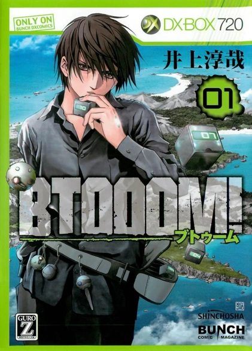
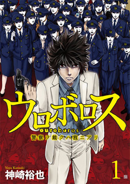
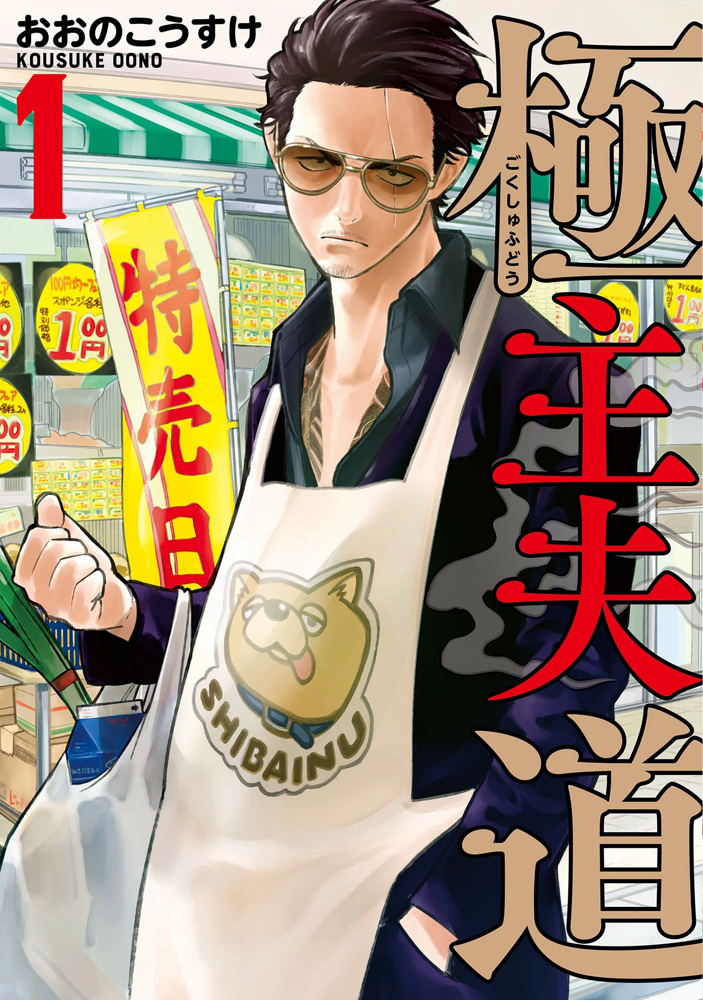
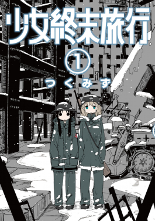
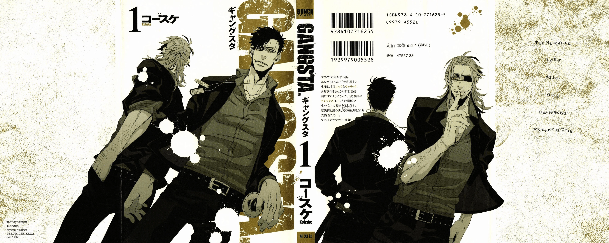

Bunch 25 años: Inoue y Kanzaki recuerdan el legado de BTOOOM! y Uroboros
El sello Comic Bunch de Shinchosha celebró su 25 aniversario en mayo de 2026, y para conmemorarlo, la revista reunió a dos de sus autores más emblemáticos: Inoue Junya (creador de BTOOOM!) y Kanzaki Yuya (autor de Uroboros) en una conversación publicada por Comic Natalie. Durante el diálogo, ambos repasaron la historia de la revista, desde su enigmático nacimiento hasta su transformación digital, y compartieron anécdotas sobre el proceso creativo, la relación con sus editores y el futuro de la industria.
De revista misteriosa a plataforma digital
La historia de Bunch comenzó en mayo de 2001 como Weekly Comic Bunch, una publicación que desconcertó a propios y extraños al reunir secuelas de clásicos como Hokuto no Ken y City Hunter en un mismo paquete. Kanzaki recuerda: "Era un misterio. Los grandes maestros como Hara Tetsuo y Hojo Tsukasa, que venían de Shueisha, estaban dibujando allí. Nadie entendía bien qué era esa revista". Inoue, entonces lector, confiesa que le voló la cabeza: "Era mi generación exacta. Me dejó boquiabierto".
En 2011, la revista dio un giro radical al convertirse en Monthly Comic @Bunch, un cambio que ambos autores vivieron en carne propia. "Pasó de ser una revista con un color muy definido a un caos creativo maravilloso", dice Kanzaki. "De repente había autoras mujeres, lectores femeninos, géneros de todo tipo... y nosotros, los veteranos, nos sentíamos como si nos hubieran puesto en primera línea de golpe", agrega Inoue entre risas. La revista continuó su evolución: en 2018 se relanzó como Monthly Comic Bunch, en abril de 2024 migró a la web como Comic Bunch Kai, y en noviembre de 2025 llegó la aplicación Kujira Bunch, que reúne obras de Bunch Kai y Kurage Bunch (lanzado en 2013).
BTOOOM! y Uroboros: dos obras que marcaron una era
Ambos autores comenzaron sus series insignia en 2009 en las páginas de Weekly Comic Bunch. Inoue llegó invitado tras llamar la atención de la editorial, mientras que Kanzaki llegó por iniciativa propia: "Llevaba años intentando arrancar una serie en revistas grandes, pero el proceso era eterno. Un día decidí probar suerte en Bunch. Les llevé un par de names que tenía guardados y el asunto fluyó de inmediato". Ambos coinciden en que la flexibilidad de Bunch fue clave: "En las revistas grandes hay más filtros, pero cuando pasas, tienen la máquina para convertirlo en éxito. En Bunch, la agilidad y la libertad eran el verdadero lujo", señala Inoue.
Sobre BTOOOM!, el battle royale de supervivencia en una isla desierta que inició como manga en 2009 y recibió adaptación al anime en 2012, Inoue reveló que el proceso de aprobación fue exhaustivo: "Tuve que rehacer los storyboards unas diez veces. Pero cada vez que me rechazaban, sentía que tenían razón: habían detectado puntos débiles que yo mismo intuía. Esa insistencia me obligó a profundizar en la mecánica del juego que estaba creando". Cabe destacar que el anime de BTOOOM! se encuentra disponible en la plataforma gratuita MovieArk, permitiendo a nuevas audiencias descubrir esta obra que definió el género de supervivencia en el manga de los 2010.
La polémica mirada del protagonista
Una de las anécdotas más reveladoras de la entrevista gira en torno a la única vez que Kanzaki y su editor discutieron a fondo. El editor le señaló que la mirada del protagonista de Uroboros no transmitía la seguridad necesaria. Kanzaki confiesa: "Soy sensible cuando me señalan el dibujo. Me molestó. Pero mi editor, que normalmente cede, esta vez no lo hizo. Me llevó a una librería y me señaló ejemplos concretos de otros autores. Aunque no compartía su opinión, su convicción me hizo confiar en él. Hoy sé que tenía razón". Inoue, por su parte, contó cómo una vez "ganó" una discusión telefónica con su editor, solo para llamarlo minutos después y decirle que aceptaba su sugerencia. La respuesta del editor fue: "Era lo que esperaba".
El futuro del manga y el rol del editor
Ambos autores reflexionaron sobre el cambiante rol del editor en la era digital. Inoue utiliza una metáfora: "El mangaka es el que nada; el editor va en el bote señalando hacia dónde ir. Si el editor se tira al agua, ambos se ahogan". Para Kanzaki, el editor es el puente con la realidad: "Yo no tengo experiencia laboral fuera del manga. El editor es mi ventana al mundo real: las ventas, las encuestas, los números... todo eso me da contextos que yo solo no podría obtener. Prefiero hacer solo lo divertido", confiesa entre risas. Ambos coinciden en la importancia de que el editor sea un cómplice, alguien que camine como "compañero de destino".
Sobre el futuro, Inoue ve a las editoriales como "productoras que reúnen talento y público", mientras que Kanzaki destaca la capacidad de Bunch para reinventarse: "Ha pasado de semanal a mensual, de papel a web, de web a app... Esa flexibilidad es única. Si dentro de cinco años me necesitan, me encantaría volver a dibujar aquí".
Exposición de arte original "Shukusai": 25 años en 25 obras
Como parte de los festejos, del 13 de junio al 5 de julio se celebrará la exposición de arte original "Shukusai" en GALLERY ZENON (Tokio), con obras de 25 series representativas, entre ellas BTOOOM!, Uroboros, Shoujo Shuumatsu Ryokou, Gokushufudou, Kyou kara Hajimeru Osananajimi, Magmell Shinsui Suizokukan y muchas más. La entrada tiene un costo de 600 yenes en reserva web y 800 yenes en taquilla.
Portadas de las obras mencionadas

BTOOOM!
Inoue Junya

Uroboros
Kanzaki Yuya

Gokushufudou
Oono Kousuke

Shoujo Shuumatsu Ryokou
Tsukumizu

GANGSTA.
Kohske
Ficha: 25 aniversario de Comic Bunch

Fuentes: Natalie.mu, Shinchosha, Comic Bunch.